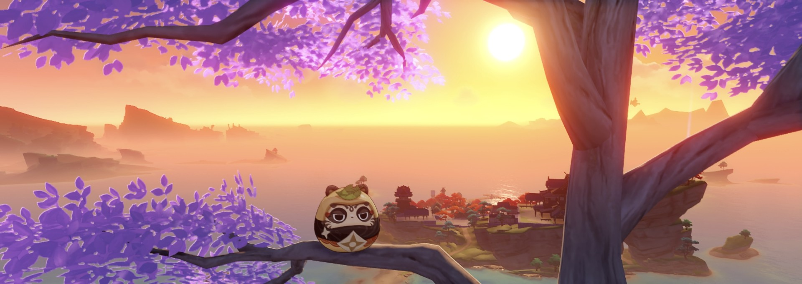
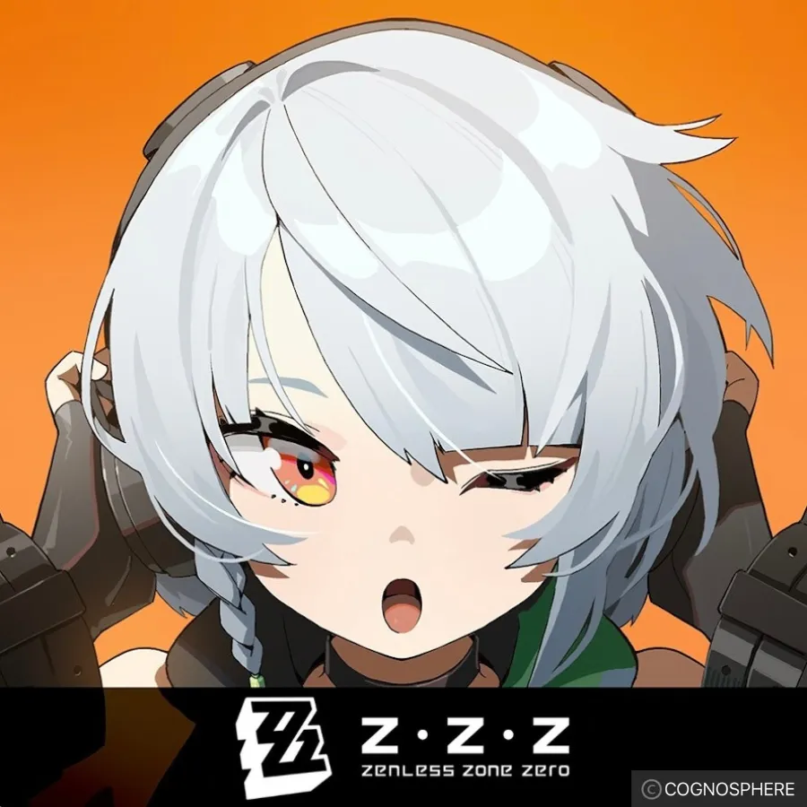

GW前に行ったonline授業の自己紹介と内容がかぶってしまい、書くことがなくなってしまったため趣味を深堀りすることにしました。
本当は書く内容に一切困らないSplatoon3がよかったのですが、単純な機材不足のために断念。よって消去法でHOYOVERSEさんの原神とゼンレスゾーンゼロ(ZZZ)について書くことにしました。
ゆっくりしていってね。
原神は、広大なファンタジー世界"テイワット"を舞台にしたオープンワールドRPG。

ゼンレスゾーンゼロは、超常災害"ホロウ"によって変わってしまった近未来が舞台のアクションRPG。